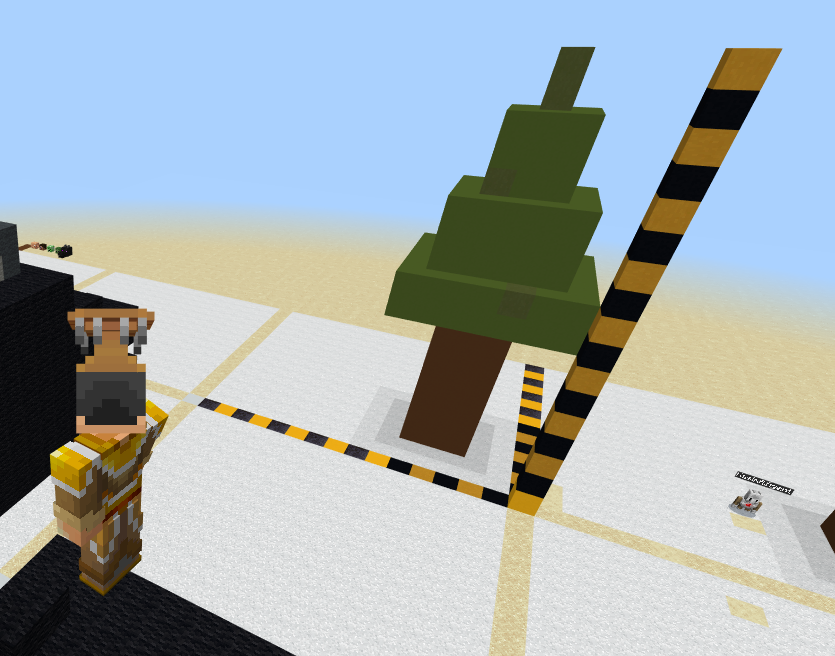
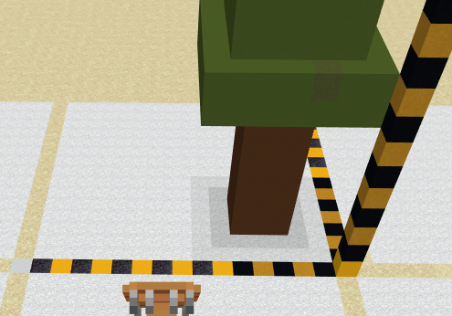
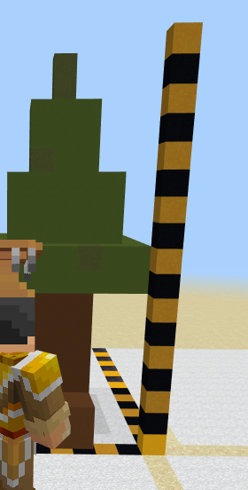
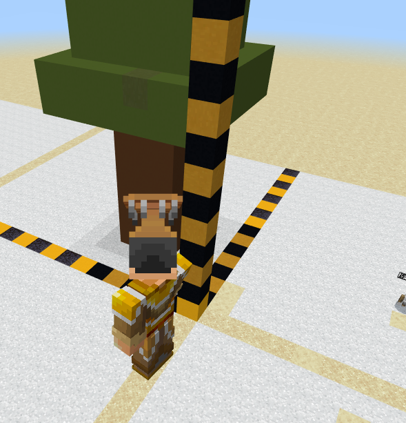
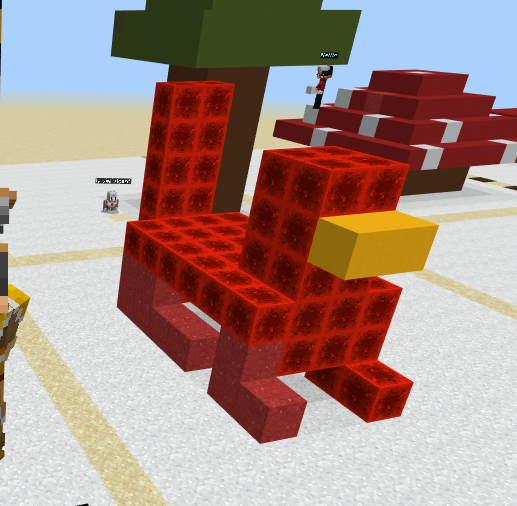

Topic: Before 3D · Course: 3D Coordinates · Level: All · Time: about 20 minutes
Pixel art used two numbers. A 3D build needs three. They always come in the same order:
Count X, then Y, then Z. Always that order.
🔴 Stand on your home spot (red block) every run. Move your feet, move your build.
Make a striped ruler for each axis, so you can see the numbers.

Stand on your home spot. Run this to lay the white floor and the yellow lines:
def on_run():
blocks.fill(WHITE_CONCRETE,
pos(1, -1, 1),
pos(15, -1, 15),
FillOperation.REPLACE)
blocks.fill(YELLOW_CONCRETE,
pos(5, -1, 1),
pos(5, -1, 15),
FillOperation.REPLACE)
blocks.fill(YELLOW_CONCRETE,
pos(10, -1, 1),
pos(10, -1, 15),
FillOperation.REPLACE)
blocks.fill(YELLOW_CONCRETE,
pos(1, -1, 5),
pos(15, -1, 5),
FillOperation.REPLACE)
blocks.fill(YELLOW_CONCRETE,
pos(1, -1, 10),
pos(15, -1, 10),
FillOperation.REPLACE)
player.on_chat("grid", on_run)
Now place the three rulers by hand — yellow, black, yellow, black all the way:
🟨⬛ The stripes are there so you can count without guessing.
X is across. Follow the striped line going left to right.

The block next to your home spot is 1. Then 2, 3, 4 …
place red block at (1, ?, ?)
place red block at (2, ?, ?)
place red block at (3, ?, ?)
Which way do these blocks go? Circle one: across · up · forward
X starts at which number? Circle one: 0 · 1
Y is up. Follow the striped pillar.

⚠️ Y is different. The block on the ground is 0 — not 1. Then 1, 2, 3 …
place red block at (?, 0, ?) # on the ground
place red block at (?, 1, ?) # one higher
place red block at (?, 2, ?) # one higher again
Y starts at which number? Circle one: 0 · 1
A block at y = 3 is …? Circle one: on the ground · 3 blocks up
Z is forward — away from you, deeper into the grid.

The block in front of your home spot is 1. Then 2, 3, 4 …
place red block at (?, ?, 1)
place red block at (?, ?, 2)
place red block at (?, ?, 3)
Which number is like x — starts at 1? Circle one: y · z
Read (5, 2, 3) in three steps:
| Step | Number | Ruler | Do this |
|---|---|---|---|
| 1 | x = 5 | across | walk 5 right |
| 2 | y = 2 | up | go 2 up (ground is 0) |
| 3 | z = 3 | forward | go 3 forward |
Where is (4, 0, 6)? Circle one: on the ground · 4 blocks up · 6 blocks up
Which coordinate is on the ground? Circle one: (2, 1, 2) · (2, 0, 2)
These two blocks are stacked. Which number grew?
place red block at (7, 1, 2)
place red block at (7, 2, 2)
Circle one: x · y · z
Warm-up: stand on your home spot and place one block at (3, 0, 3). Check it against your rulers.
Build the chicken. Count x, then y, then z for every block.

🧱 Recipe (red nether brick, yellow concrete for the beak):
- legs: (4, 0, 4) and (4, 0, 5)
- body: (3, 1, 4) to (6, 2, 5)
- tail: (2, 3, 4) and (2, 3, 5)
- head: (6, 3, 4) to (7, 4, 5)
- beak: yellow at (8, 3, 4) and (8, 3, 5)
If you finish early, give it a comb on top of the head.
Record one video (a phone is fine). Show two things:
1 · Your code. Scroll through it. Say what each part does.
2 · Your build. Point the camera. Count one block out loud — x, then y, then z.
Say these out loud, filling in the blanks:
Today I built ______.
I built it using this code: ______.
In this code I used ______.
The hardest part was ______.
That part was hard because ______.
Send this worksheet + your video to teacher on KakaoTalk.